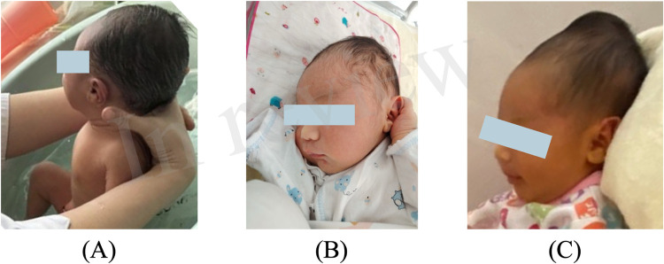

Página 6 · O outro instrumento e o trade-off
O vácuo-extrator e a troca de complicações
O vácuo-extrator machuca menos a mãe. Logo, seria o instrumento mais seguro, para usar sempre — certo? A frase que a banca adora esconde a outra metade: ele machuca mais o feto. Toda a página é essa troca — e o sentido dela, que não se inverte.
O que é e onde se encaixa
O vácuo-extrator é uma opção ao fórceps de alívio: entra quando a cabeça já está baixa, só para o desprendimento, sem rotação ativa — o operador não gira a cabeça (como faria com o Kielland), embora ela autorrode passivamente ao descer sob tração. Além do menor trauma de canal, ele tem uma vantagem própria e distinta: a técnica é mais simples e mais fácil que a do fórceps. Guarde essas duas vantagens como coisas separadas — "mais fácil" não é sinônimo de "menos trauma"; são méritos diferentes, e a banca separa.

O achado central é a campânula, conectada por um tubo à bomba manual. A ventosa adere ao couro cabeludo fetal por pressão negativa e permite a tração assistida no período expulsivo. O diferencial visual com o fórceps: aqui não há duas colheres metálicas articuladas — há uma única campânula de sucção.
"Kiwi-vacuumextractor.jpg", MinkVerbaan, via Wikimedia Commons — CC BY-SA 4.0 · página de origem
Onde a campânula pousa
A campânula se posiciona entre o lambda e o bregma, sobre a sutura sagital — não sobre as fontanelas. A pegadinha é exatamente essa: o ponto certo é entre as fontanelas (na sutura), nunca em cima delas. E o vácuo só se aplica em fetos fletidos, porque a técnica exige tocar o lambda — não se extrai um feto defletido pela bochecha.
Interativo: compare o ponto certo com o errado.
A campânula pousa entre lambda e bregma, sobre a sutura sagital — cerca de 3 cm à frente do lambda (verde, correto). O hotspot errado mostra a campânula em cima da fontanela (o que a pegadinha planta: "entre, não em cima"). E lembre da página anterior: quem manda é o lambda — o vácuo só serve em feto fletido.A troca central — a direção que não se inverte
O trade-off, na direção que não se inverte:
- Fórceps → predomina a laceração de canal vaginal (trauma materno).
- Vácuo → predomina a lesão de couro cabeludo / céfalo-hematoma (trauma fetal).
Ou seja: o vácuo dá menos trauma materno, mas mais trauma fetal. Essa é a frase-armadilha clássica — as questões exploram justamente a troca, e a maneira favorita de derrubar é invertê-la. Não inverta quem machuca quem.
| Critério | Fórceps | Vácuo-extrator |
|---|---|---|
| Função | rotação + tração + desprendimento | só desprendimento (cabeça baixa, sem rotação ativa) |
| Facilidade técnica | mais complexa | mais simples / mais fácil |
| Trauma materno | maior (laceração de canal vaginal) | menor |
| Trauma fetal | menor | maior (couro cabeludo, céfalo-hematoma) |
| Feto fletido | exigível pela pegada | obrigatório (técnica entre lambda–bregma) |
| Limite de IG | pode em prematuro | proibido < 34 sem (FEBRASGO 2023: < 32; cautela 32–36) — hemorragia intracraniana |
A necrose de couro cabeludo é evitável aliviando a pressão da campânula no intervalo das contrações (350–500 mmHg na contração → 100 mmHg no relaxamento).
A necrose de couro cabeludo é evitável
A necrose de couro cabeludo pelo vácuo é evitável — é conduta técnica, e cobrável. Basta aliviar a pressão da campânula no intervalo das contrações. No padrão clássico, a pressão fica em 350–500 mmHg (máx. 500) durante a contração e cai para 100 mmHg no relaxamento. É esse alívio periódico que protege o couro cabeludo.

Tumefação localizada sobre a região parietal que respeita os limites ósseos — o sangue fica preso no espaço subperiosteal e não cruza as suturas (diferente do caput succedaneum, que cruza, e da hemorragia subgaleal, que se espalha). O vácuo é fator de risco clássico; a imagem serve para reconhecer o achado, não para provar a etiologia deste caso.
Peng et al., Progressive cephalohematoma in a neonate revealing severe hemophilia A, Frontiers in Pediatrics, 2025 (PMC) — CC BY 4.0 · página de origem
O corte das 34 semanas — só o vácuo
O vácuo não deve ser usado abaixo de 34 semanas: nos prematuros, a pressão negativa sobre vasos imaturos pode causar hemorragia intracraniana. E o ponto que a banca adora: essa restrição é só do vácuo — o fórceps pode ser usado inclusive em prematuros (é, aliás, o preferido: mais seguro em fetos < 2000 g, utilizável até ~1000 g). Quando a questão diz "não usar em prematuro", refere-se ao vácuo.
O corte clássico e mais cobrado é < 34 semanas (ACOG/RCOG, maioria das bancas). A FEBRASGO 2023 desloca o corte duro para contraindicado < 32 semanas, com 32–36 semanas como faixa de "usar com muita cautela" (limite inferior de segurança ainda não estabelecido). Uma questão que cite FEBRASGO 2023 espera 32; uma de tradição ACOG/RCOG espera 34. Os dois circulam — saber os dois blinda a resposta.
Quiz — fixação
Sobre o trade-off de complicações entre fórceps e vácuo:
- C) Correta. A direção é fixa: vácuo = menos materno, mais fetal; fórceps = mais laceração de canal (materno), menos fetal.
- A) Frase-armadilha invertida. Trocar quem machuca quem é exatamente o erro que a banca planta.
- B) Também invertida. O fórceps predomina no trauma materno, não no fetal.
- D) Apaga a distinção que é todo o ponto. Os perfis são diferentes e complementares — por isso se escolhe um ou outro conforme para quem se transfere o risco.
Gestante de 33 semanas, feto prematuro, indicação de abreviar o expulsivo. Sobre a escolha do instrumento:
- B) Correta. O corte de IG é vácuo-específico: abaixo de 34 semanas (FEBRASGO 2023: < 32; cautela 32–36) o vácuo é contraindicado pela hemorragia intracraniana em vasos imaturos — e o fórceps pode (é o preferido, mais seguro < 2000 g). Em 33 semanas o vácuo cai tanto na faixa proibida do corte clássico quanto na "muita cautela" da FEBRASGO — de todo modo, fórceps é a resposta.
- A) Ignora a contraindicação por conveniência. "Mais fácil" não vale um crânio prematuro.
- C) Apaga o divisor que é o cerne da questão. A idade gestacional muda o instrumento.
- D) Inventa indicação absoluta de cesárea. Prematuridade não proíbe a via vaginal operatória — proíbe o vácuo.
Sobre a aplicação e a segurança do vácuo, assinale a correta:
- B) Correta. A campânula pousa entre as fontanelas, na sutura sagital (~3 cm à frente do lambda), e a necrose é prevenível aliviando a pressão no intervalo (350–500 → 100 mmHg).
- A) Coloca a campânula em cima da fontanela. Exatamente o erro que a pegadinha planta ("entre, não em cima").
- C) Ignora que o vácuo exige feto fletido. A técnica depende de tocar o lambda.
- D) Transforma dano condicional e evitável em fatalidade. É o oposto da conduta cobrável: o dano fetal do vácuo é gerenciável pela técnica.
De volta à paciente exausta da abertura — todos os critérios cumpridos, chega a hora de nomear a conduta e dizer, sem decorar, o que pode complicar.